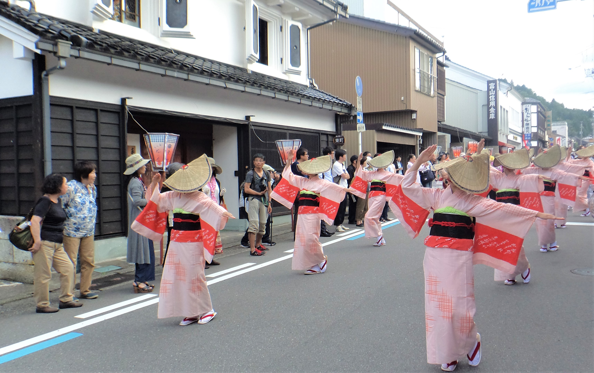
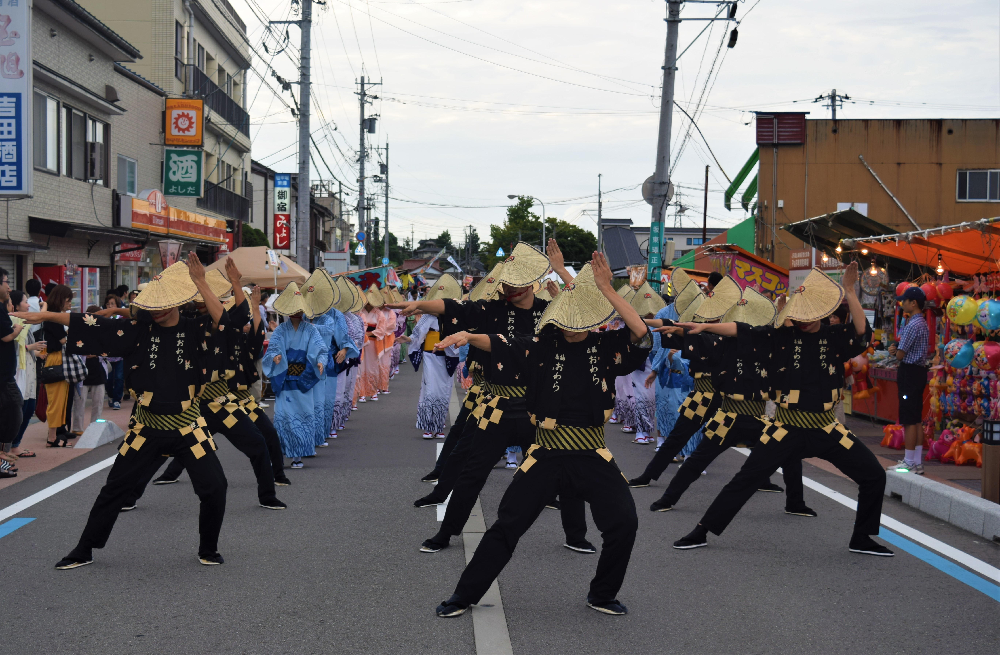
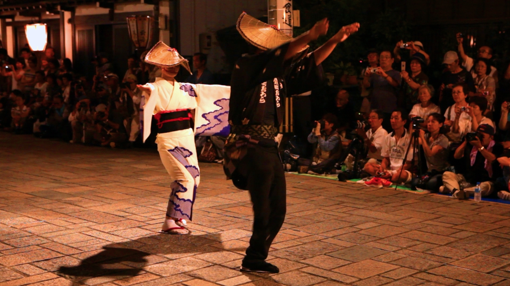
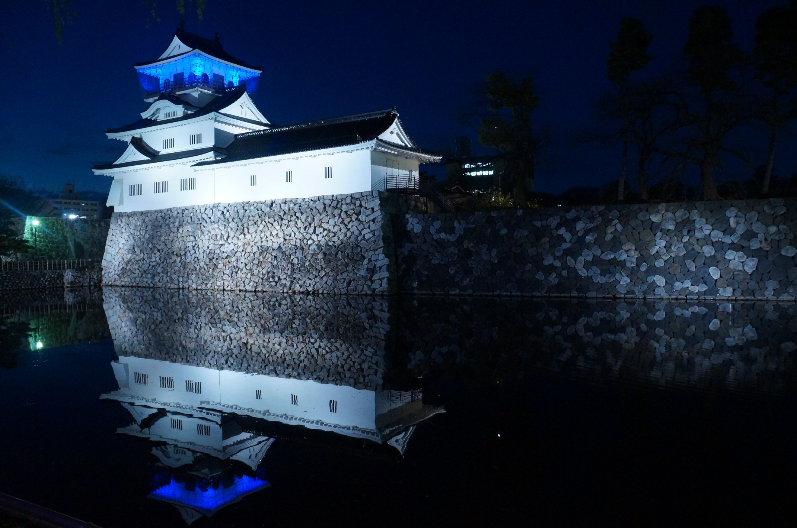

富山県黒部市黒部峡谷口11
富山県南砺市相倉
富山県中新川郡立山町芦峅寺
富山県中新川郡立山町芦峅寺
富山県南砺市井波
富山県魚津市小川寺字天神山1070

富山県富山市本丸1-62（富山城址公園内）
富山県高岡市関本町35

富山県富山市八尾町上新町289

富山県高岡市太田雨晴
富山県滑川市中川原410
富山県射水市海王町8

富山県富山市岩瀬大町
富山県富山市古沢277
富山県富山市安養坊1118-1

富山県富山市西中野町1-8-31

富山県魚津市三ケ1390

富山県富山市木場町3-20

富山県富山市湊入船町5

富山県富山市一番町1-5

富山県富山市新桜町7-38


富山市岩瀬大町。北前船で栄えた港町の町並みです。


おわら風の盆の歴史と空気を感じられる場所です。
恐竜、星、自然など科学を体験しながら学べる博物館です。



富山の歴史を、城とともに感じられる場所です。

魚津市の遊園地。観覧車からの山岳と日本海を同時に見れます。

今から800年前、京都にひとりの子が生まれる。名は牛若丸。のちの、源 義経だ。

軽やかに跳ねるように走り、剣の修行に励む日々。その瞳には、強い意志が宿っていた。

山の寺で修行を重ね、心の奥に静かな強さを秘める義経。
彼はまだ、自らの過酷な運命を知らない。

その影はやがて、未来へ続く道を歩きはじめる。激動の歴史の幕が上がろうとしていた。

月日は流れ義経は歴史の表舞台へと躍り出る。

激流うずまく壇ノ浦の合戦。
義経は敵の矢をかいくぐり、八艘飛びの奇策で平家を圧倒する。

平家の滅亡後、追われる身となった義経は、良質な馬の産地で、蝦夷地との交易拠点でもある平泉を目指した。

平泉の奥州藤原氏には、義経の信頼する仲間も保護する力があった。平泉を目指す道中に北陸の地へと逃れる。

互いを信じ抜き、険しい旅を続ける義経の一行。旅の途中、富山県高岡市の雨晴海岸へとたどり着く。

突然の激しいにわか雨。弁慶は義経の一行を守るため、怪力で巨大な岩を持ち上げた。

持ち上げられた岩の陰で身を寄せ合い、静かに雨が止むのを待ったという。

雨宿りをしながら日本海を見つめる義経。
どれほどの窮地に立たされようとも、未来への『希望の感情（きぼうかんじ）』を捨てさることなく、前へ進むことを心に誓う。

やがて雲の切れ間から光が差し込み、空は晴れ渡った。
義経の一行は再び平泉への歩みを進める。

これこそが、『雨晴（あまはらし）』と呼ばれる地名の由来となった伝説の瞬間なのだ。

歴史を駆け抜けた義経一行の軌跡は、現在もこの浜の記憶として、静かに息づいている。

春
海風に花びらが舞い
白き峰にはまだ雪が残る。

初夏
山々の雪解け水が流れ
海は澄んだ青を開く。

夏
波間に白い光が燃え
入道雲が空へ立ちのぼる。

秋
夕暮れが浜を染め
山影がくっきりと深まる。

晩秋
海から霧が立ちのぼり
峰々は淡い紅に染まる。

冬
雪が浜を覆い
世界は静寂に包まれる。

厳冬
海から湯気のような気嵐が立ち
現代は氷霜の中を電車が走る。
四季はめぐり
景色は移ろう
それでもこの浜は
古の記憶を静かに抱いている。

静かな浜辺に
波の音だけがひびき
遠い日々の気配が
そっと胸によみがえる。
立山連峰から日本海まで、無限に重ね合わされた未来の景色。
これから観測するあなたたちの心が、希望の数え唄をつむいで
現実へと収束させていくのでしょう。

おしまい